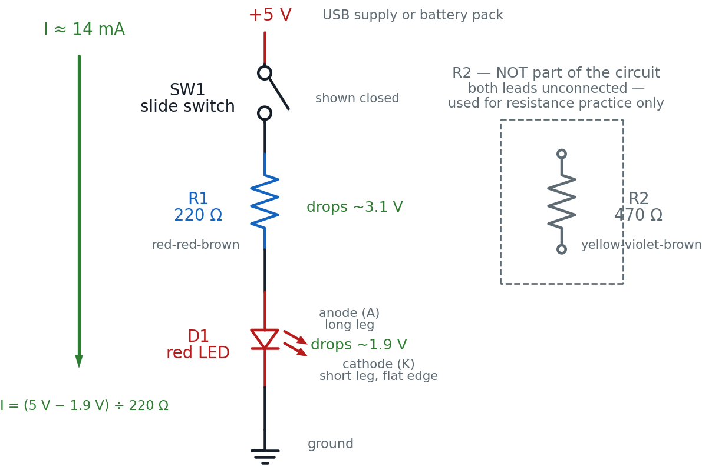

Meet Your Multimeter
You already know this circuit lights up. Today you stop taking that on faith. Add one switch to your Lab 10 build, pick up a multimeter, and prove — with real numbers — exactly what every part of the circuit is doing.
Hi again, builder!
 You've trusted this book's numbers for a while now: "about 2 volts across
a red LED," "about 14 milliamps of current." Today you check every one of
them yourself, on a circuit you already trust. Let's light it up!
You've trusted this book's numbers for a while now: "about 2 volts across
a red LED," "about 14 milliamps of current." Today you check every one of
them yourself, on a circuit you already trust. Let's light it up!
What You'll Learn
By the end of this lab you will be able to:
- Build the switched LED circuit from Chapter 20's multimeter examples, adding a slide switch to a circuit you already know
- Measure DC voltage across a battery and across a lit LED, and compare each reading to a prediction
- Measure current by breaking the circuit and reading milliamps with the meter in series
- Measure a resistor's real value, in and out of a circuit, and compare it to its color code from Chapter 11
- Test continuity on a switch and a jumper wire, and explain what the beep is actually telling you
Before You Start
| Time | 50 minutes |
| Difficulty | Beginner-Intermediate — the circuit is one you've built before; the meter is new |
| You should already know | How to build the LED-and-resistor circuit (Lab 10) and how a switch closes a loop (Lab 11) |
| Helpful background | Chapter 20: Using a Multimeter, Chapter 11: Resistor Codes and Capacitor Details |
What You'll Need
Everything here is in the $50 kit.
| Qty | Part | Value or marking | How to spot it |
|---|---|---|---|
| 1 | Breadboard | half-size, 30 columns | the white plastic board with rows of holes |
| 1 | LED | red, 5 mm | clear red dome; one leg longer than the other |
| 1 | Resistor (R1) | 220 Ω | tan body, bands red-red-brown, then gold |
| 1 | Resistor (R2) | 470 Ω | tan body, bands yellow-violet-brown, then gold |
| 1 | Slide switch (SW1) | small on/off slider | plastic body with a sliding lever on top |
| 2 | Jumper wire | 1 red, 1 black | for the positive and ground connections |
| 1 | USB power supply | 5 V, or a 3×AA battery pack | any phone charger with a USB-A cable |
| 1 | Multimeter | digital, auto-ranging | yellow or black handheld tool with two probe wires |
No multimeter at your desk? You can still finish.
 A multimeter is a shared tool in a lot of classrooms, so this lab prints
every expected reading right where you need it — battery voltage, LED
voltage, current, and resistance. Build the circuit, read the numbers
printed here, and you will still understand exactly what a meter would
have shown you. Borrow one when you can, though — nothing beats seeing
your own number land where the book predicted.
A multimeter is a shared tool in a lot of classrooms, so this lab prints
every expected reading right where you need it — battery voltage, LED
voltage, current, and resistance. Build the circuit, read the numbers
printed here, and you will still understand exactly what a meter would
have shown you. Borrow one when you can, though — nothing beats seeing
your own number land where the book predicted.
Safety First
At 5 volts, nothing on this breadboard can shock you. You can touch every part of this circuit, live, with bare hands. The habits below protect your parts and your meter, not you.
- Wire first, power last — and unplug before you rewire. A live wire touching the wrong hole is how you make a short circuit, a path where current skips the resistor entirely and races straight from + to −.
- Set the dial and check the jacks before the probes ever touch anything. The red probe goes in the jack marked VΩmA for voltage, resistance, and small currents; the black probe stays in the jack marked COM (short for "common") for every single measurement in this lab.
- Never spin the dial to resistance or continuity mode on a powered circuit. Those two modes send the meter's own small test current through whatever the probes touch. A powered circuit fighting the meter's test current gives you a meaningless number, and can damage the meter.
- Never leave the dial on current mode and touch the probes across a power source, the way you would for a voltage reading. Current mode looks like a wide-open wire to the meter — touching it straight across a battery is close to a dead short, and can pop the meter's internal fuse instantly.
Power OFF before resistance or continuity mode. No exceptions.
 This is the one rule in this whole lab that is not negotiable. Before you
ever turn that dial to Ω or the continuity speaker icon, unplug the 5 V
supply completely. Voltage and current modes are fine to use on a live
circuit — that's the whole point of them. Resistance and continuity are
not. Get in the habit now, on a harmless 5 V board, and it will protect
you on bigger projects for the rest of this book.
This is the one rule in this whole lab that is not negotiable. Before you
ever turn that dial to Ω or the continuity speaker icon, unplug the 5 V
supply completely. Voltage and current modes are fine to use on a live
circuit — that's the whole point of them. Resistance and continuity are
not. Get in the habit now, on a harmless 5 V board, and it will protect
you on bigger projects for the rest of this book.
Try It in the Simulator
Learn the Parts First
Before you probe anything, take a labeled tour of the tool itself. Click or hover every part of the meter below — the display, the dial, both probes, and both jacks — until you can name each one without looking.
Pay special attention to two things: which jack each probe lives in (red in VΩmA, black in COM, always), and what the dial's different positions actually do. You'll use both facts in every job below.
Practice on a Real Circuit
Now practice on a virtual meter where nothing can go wrong. This is the exact circuit you're about to build — R1, SW1, D1, and an unconnected R2 sitting off to one side.
Try this before you build anything real:
- Pick voltage mode, then click the test point across the battery. That glowing green reading is exactly what you'll see on your own meter in a few minutes.
- Switch to resistance mode and click the LED's test point while the circuit is still powered. Read the infobox that pops up — that explanation is the entire reason for this lab's power-off rule.
- Click SW1 open, then closed, in continuity mode, and listen for the beep. That's the fastest of all four jobs, and you'll do it for real at the very end of this lab.
The Circuit Diagram
Here is the circuit you're building: the same R1-and-D1 pair from Lab 10, with a slide switch added in series, plus a second resistor drawn off to the side that is never wired into anything.

Read it top to bottom, the way current flows once SW1 is closed: out of +5 V, through SW1, down through R1, down through D1 (anode side in, cathode side out), and into ground. R2, off to the right inside the dashed box, connects to nothing — that's on purpose, not a mistake in the drawing.
Why measure a resistor that isn't even wired in?
 Resistance mode needs to push its own tiny test current through a part
with nothing else interfering. R2 sitting there unconnected is the
simplest possible case — no circuit to power down, no part to pull out.
Later in this lab, you'll also pull R1 out of the live circuit and
measure it the harder way, so you can compare both methods.
Resistance mode needs to push its own tiny test current through a part
with nothing else interfering. R2 sitting there unconnected is the
simplest possible case — no circuit to power down, no part to pull out.
Later in this lab, you'll also pull R1 out of the live circuit and
measure it the harder way, so you can compare both methods.
The Breadboard Layout
Now the same circuit on the actual board, plus R2 sitting untouched in the bottom half.

The picture and the schematic show the same circuit. Here is how they line up:
| In the schematic | On the breadboard |
|---|---|
| The +5 V rail | The red + rail, reached by the red jumper into a3 |
| SW1, the slide switch | The plastic-bodied part bridging b3 and b6 |
| R1, the 220 Ω resistor | The tan part bridging c6 and c12 |
| D1, the LED, anode side up | The red dome, long leg (anode) in d12, short leg (cathode) in d13 |
| The ground symbol | The blue − rail, reached by the black jumper from a13 |
| R2, drawn isolated in the dashed box | The tan part sitting alone in f20 and f24, in the unused bottom half — wired to nothing |
Column groups a3–e3, b6/c6, c12/d12, and a13/d13 are each one connected node inside the board, which is what lets a jumper leg, a switch leg, a resistor leg, and an LED leg share a node without ever touching each other directly.
Build It
Work down this list in order. The first part is fast — you've built this exact resistor-and-LED pair before. The four "Job" sections after it are the actual point of this lab, so take your time there.
Build the circuit
- Leave the power unplugged. Every wire and part goes in before any power does.
- Push SW1's two legs into b3 and b6. Slide it to the OFF position for now.
- Push a red jumper into a hole on the red + rail, and its other end into a3.
- Bend the legs of R1 (220 Ω) down, and push them into c6 and c12.
- Push the LED's long leg (anode) into d12 and its short leg (cathode) into d13. The long leg always faces the resistor.
- Push a black jumper into a13, and its other end into a hole on the blue − rail.
- Checkpoint — before power. Trace the loop out loud: + rail → a3 → SW1 → b6 → R1 → c12 → LED anode → cathode → a13 → − rail. If any link in that sentence has nothing in it, find the gap now.
- Predict first: with SW1 still off, will the LED light when you plug in power? Write your guess down.
- Plug in the 5 V supply, then slide SW1 to ON. The LED should light immediately — that's your success checkpoint for this part.
Job 1: Measure voltage — the circuit stays powered
Voltage is the easiest place to start, because reading it never requires opening the circuit. You touch two points and read the difference.
- Predict: with SW1 closed and the LED lit, what do you expect the meter to read across the + and − rails? Write down a number.
- Set the dial to DC volts (V⎓). Confirm the red probe is in the VΩmA jack and the black probe is in COM.
- Touch the red probe to any hole on the + rail and the black probe to any hole on the − rail. Read the display. Expect close to 5.0 V.
- Predict again: an LED's forward voltage — the voltage it always uses up while lit — is about 1.9 V for red, from Chapter 20. What do you expect across D1?
- Touch the red probe to d12 (the anode) and the black probe to d13 (the cathode). Read the display. Expect close to 1.9 V.
Job 2: Measure current — you have to break the loop on purpose
Current can only be measured by becoming part of the path it's flowing through, which is why this job takes one extra step voltage never needed.
- Predict: using the two voltages you just measured, calculate the expected current: \((5.0\text{ V} - 1.9\text{ V}) \div 220\ \Omega\).
- With the circuit still powered and SW1 still ON, gently pull the black jumper's end out of hole a13 only — leave its other end in the − rail. The LED goes dark. You just opened the loop on purpose.
- Set the dial to DC milliamps (mA). Move the red probe to the jack labeled mA if your meter has a separate one; otherwise VΩmA is fine.
- Touch the red probe into hole a13 and the black probe to the dangling end of the black jumper. The LED should light again — the meter is now completing the circuit for you.
- Read the display. Expect close to 14 mA, and check it against your prediction from step 15.
Job 3: Measure resistance — power OFF, no exceptions
- Unplug the 5 V supply completely. This is the hard rule from Safety First — resistance mode cannot handle a powered circuit.
- Set the dial to Ω (resistance).
- Touch the two probes to R2's legs in f20 and f24. R2 was never wired in, so you can measure it exactly as it sits. Expect close to 470 Ω (within about 5%, roughly 447–494 Ω).
- Gently lift R1 out of the board (pull it from c6 and c12), and touch the probes to its two bare leads. Expect close to 220 Ω (roughly 209–231 Ω).
- Compare both readings to the color-band values you'd decode with Chapter 11's table. Then push R1 back into c6 and c12.
Job 4: Test continuity — still powered OFF
- Confirm the power is still unplugged — it should be, from Job 3.
- Set the dial to continuity mode (the sound-wave / speaker icon).
- Touch the probes to SW1's two legs (b3 and b6) while it's OFF (open). You should hear silence — no connection.
- Slide SW1 to ON and touch the same two legs again. You should hear an instant beep.
- Touch the probes to the two ends of the black jumper you disconnected in Job 2 (or any spare jumper). A beep means a good wire; silence means a broken one.
- Push the black jumper back into a13, plug the 5 V supply back in, and confirm the LED lights again with SW1 closed.
You are done when you've recorded four real numbers — battery voltage, LED voltage, current, and resistance — plus two continuity results, every one of them close to its predicted value, and your circuit is back together with the LED glowing.
You just proved your own circuit.
 Four different jobs, one small tool, zero guessing. You didn't just watch
an LED turn on this time — you measured the voltage, caught the current
in the act, weighed the resistors, and listened for a beep. That's a real
engineer's superpower, and it's yours now. Current's flowing your way!
Four different jobs, one small tool, zero guessing. You didn't just watch
an LED turn on this time — you measured the voltage, caught the current
in the act, weighed the resistors, and listened for a beep. That's a real
engineer's superpower, and it's yours now. Current's flowing your way!
How It Works
Remember the water-pipe picture from Chapter 1: voltage is pressure, current is how much water is actually flowing, and resistance is how narrow the pipe is. That picture explains why your four jobs today felt so different from each other.
Voltage measurement never disturbs the pipe. A voltmeter is like holding two pressure gauges at two different points on the outside of the pipe — it reads the difference without diverting a drop of water. That's why you never had to break the circuit for Job 1: the meter's voltage input barely lets any current through it at all.
Current measurement has to become part of the pipe. An ammeter is a tiny paddle-wheel that has to sit inside the flow to count what passes through it. There's no way to measure "how much is flowing" without putting something in the actual path — which is exactly why Job 2 made you pull a jumper and insert the meter into the gap.
Resistance mode needs the pipe empty. To measure resistance, the meter pushes its own small test current through the part and works out the resistance from what comes back. If your 5 V supply is also pushing current through that same part at the same time, the two currents mix and the reading means nothing — which is the whole reason for Job 3's power-off rule.
Continuity is resistance mode with a very short fuse. It's the same test-current trick as Job 4, just watching for one thing: is the resistance close enough to zero to call these two points "connected"? The beep is instant because the meter doesn't bother showing you a number — it just answers yes or no.
Here's the arithmetic behind Job 2's prediction, using the numbers you actually measured:
That's the same Ohm's Law arithmetic Lab 10 used to choose R1 in the first place — except this time you're checking a real measured number against it, not just trusting the formula.
Where you've seen this
 Every time a phone repair technician touches two probes to a circuit
board to see whether a broken screen is actually a broken connection,
they're doing exactly what you did in Job 4 — no formula, no guessing,
just a beep that means "these two points are the same point electrically."
Every time a phone repair technician touches two probes to a circuit
board to see whether a broken screen is actually a broken connection,
they're doing exactly what you did in Job 4 — no formula, no guessing,
just a beep that means "these two points are the same point electrically."
When It Doesn't Work
Work down this list in order: check the dial and jacks before you check anything clever, and change only one thing at a time. One display message is worth knowing before you start: "OL" (short for overload) almost never means the meter is broken — it means the value is too large for the range, or more often in this lab, that there's no complete path for it to measure.
| What you see | Likely cause | Fix |
|---|---|---|
| Display reads "OL" where you expected a normal number | An open connection, or (on a manual-range meter) too small a range selected | Confirm both probes are firmly seated in their holes; on an auto-ranging meter, OL almost always means an actual open path — recheck the connection |
| Meter shows nothing at all — blank display | Meter is off, or the dial is still on OFF | Turn the dial to the mode you need; check the meter's own battery if it still won't light up |
| A reading is suspiciously low, zero, or wildly wrong | Red probe is in the wrong jack for the selected mode | Move the red probe to VΩmA for voltage/resistance, or to the dedicated mA jack if your meter has one |
| Job 2: LED stays dark and current reads 0.00 mA after you reinsert the meter | Probes aren't actually bridging the gap at a13, or the jumper's other end slipped out of the − rail | Reseat both probe tips firmly in a13 and the dangling jumper end; confirm the jumper's far end is still in the rail |
| Job 3: resistance reading is negative, unstable, or nowhere close to the color code | The board is still powered, or the part still has another connection to the circuit | Recheck the supply is unplugged, and that R1 is fully out of the board before probing its leads |
| Job 4: no beep on the closed switch | Probes are on the wrong two legs, dial isn't actually on continuity, or the switch isn't fully slid over | Confirm the dial position, slide SW1 firmly to ON, and try the same two legs again |
Check Your Understanding
Answer each one before you open it.
1. You want to check whether a jumper wire is broken, without wiring it into any circuit. Which mode do you pick, and why not just measure its resistance in ohms instead?
Continuity mode. You could technically use resistance mode and look for a reading near 0 Ω, but continuity mode does that exact check for you automatically and answers with an instant beep — faster to use and impossible to misread.
2. You switch to Ω mode, touch the probes to R2's two legs, and the display reads OL. Name two different things that could cause this.
The probes might not be making solid contact with the leads — try pressing them more firmly, or on cleaner spots of the leads. Or the resistor itself could genuinely be open (broken internally), which does happen to damaged parts. Either way, OL in resistance mode on a small kit resistor almost never means "value too large for the range" — the kit's resistors are far too small to overload an auto-ranging meter.
3. Your supply reads 5.0 V and your lit LED reads 1.9 V. Predict the current through R1 (220 Ω) using Ohm's Law, then say whether that matches what you measured in Job 2.
That should land within a milliamp or so of what you actually measured in Job 2 — about 14 mA. Small differences are normal; resistors and LEDs both have real-world tolerance, not perfectly exact values.
4. Why does measuring voltage never require breaking the circuit, but measuring current always does?
A voltmeter is connected in parallel, across two points, and lets almost no current flow through itself — it just compares the electrical pressure at those two points from the outside. An ammeter has to be connected in series, directly in the current's path, because the only way to count how much charge is flowing is to have it all pass through the meter. There's no way to do that without opening a gap in the circuit and inserting the meter into it.
5. Your LED stays dark after Job 2's rewiring, and the display reads 0.00 mA. List two different things you'd check before assuming the LED itself is broken.
First, check that both probe tips are actually seated in the gap you created — one in hole a13, one on the dangling jumper end — since a loose probe looks identical to "no current" on the display. Second, confirm the dial is really on mA and the red probe is in the correct jack for current, not still set for voltage. A meter set to the wrong mode reads a meaningless number, not a helpful error.
6. Why must you always unplug power before switching to resistance or continuity mode?
Both modes work by sending the meter's own small test current through whatever the probes touch, then calculating a result from what comes back. If your 5 V supply is also pushing current through that same part at the same time, the two currents interfere and the reading is meaningless at best — and on some meters, risks damaging the meter's internal resistance-measuring circuit.
7. A classmate's resistor measures 240 Ω, but its color bands read red-red-brown — 220 Ω. Is their resistor broken?
Probably not. A 220 Ω resistor with a gold tolerance band is allowed to measure anywhere from about 209 Ω to 231 Ω and still be considered a good part. At 240 Ω, this one is just outside that ±5% window, which usually means either a slightly out-of-spec part or a resistor that got mixed up with a different value — not a broken one. The fix is to re-check the color bands carefully, not to assume the meter is wrong.
Take It Further
Challenge: verify more of your kit. Pull two or three more resistors from your kit at random. Decode each one's color bands using Chapter 11's table, write down your predicted value, then measure each one with the meter in resistance mode.
You have succeeded when every measured value falls within about 5% of its color-coded value, and for any one that doesn't, you can explain why — a misread color band is far more likely than a bad resistor.
If that was easy, try this: measure the LED itself in resistance mode while it's out of the circuit, in both directions (swap which probe touches which leg). You'll see two very different readings. That's your first hands-on proof of what Chapter 12 called a diode's one-way behavior — a multimeter's resistance mode can even help you test which leg is which on an unmarked LED.
Learn More
- Chapter 20: Using a Multimeter — the full explanation behind every mode you used today, including the Virtual Multimeter Breadboard sim
- Chapter 11: Resistor Codes and Capacitor Details — the complete ten-color decoder ring for checking any resistor's coded value
- Lab 10: Your First LED Circuit — the original build this lab's circuit is based on, including the Ohm's Law math for R1
- Lab 11: LED Button Circuit — where a switch first joined one of this book's circuits
- SparkFun: How to Use a Multimeter — an outside tutorial with photos of real meters and extra measurement examples